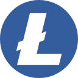
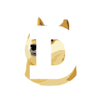

Litecoin ve Dogecoin madencileri için
LTC ve DOGE cihazınla Pepecoin de kaz
Scrypt ASIC’in büyük bir havuzda Litecoin ve Dogecoin kazıyorsa, büyük ihtimalle Pepecoin blokları üzerinde de çalışıyor. Pepecoin (PEP) merge mining ile kazılır: aynı hash’ler, ekstra elektrik yok, üçüncü bir coin. Asıl soru, havuzunun bunu sana ödeyip ödemediği.
stratum+tcp://… · Scrypt
Litecoin LTCana zincir✓ ödeniyor
Dogecoin DOGEmerge mining✓ ödeniyor Pepecoin PEPmerge mining · blok başına 10.000 PEPsana ödeniyor mu?
Pepecoin PEPmerge mining · blok başına 10.000 PEPsana ödeniyor mu?
Havuzun sana PEP ödüyor mu?
Havuzlar ekstra coin’i dört yoldan biriyle ele alır. Aşağıda kendi havuzunu bul, sonra kendi sayfasını kontrol et: havuz kuralları değişir.
OtomatikPEP havuz hesabına düşer
- ViaBTC
LTC kazım adresinle aynı adres üzerinden ViaBTC hesabına yatar, her 2 saatte bir hesaplanır. Sonra kendi PEP adresine çekersin.
Kaynak: ViaBTC, 2024-12-10
İşlem gerekliPEP ancak PEP adresi eklersen
- Binance Pool
Binance Pool hesabına bir Pepecoin ödeme adresi ekle. Adres yoksa hiç PEP yazılmaz. Minimum ödeme 20.000 PEP.
Kaynak: Binance, 2024-12-23
PEP öderÖdeme ayarlarını kontrol et
LTC ve DOGE’ye ek olarak PEP öder. Hesabında merge mining veya ödeme ayarlarını bul ve P ile başlayan bir adres ekle.
- F2PoolKaynak: F2Pool
- AntPoolKaynak: Ultramining, 2024-12-06
- KuPoolKaynak: KuPool
- EMCDKaynak: EMCD
- Mining-Dutch
Ayrı bir Pepecoin havuzu var ve PEP olarak öder.
Kaynak: Mining-Dutch
PEP olarak değilPEP’in değerini LTC veya DOGE olarak alırsın
- litecoinpool.org
PEP’i merge mining ile kazar, değerini ekstra LTC ve DOGE olarak öder (daha yüksek PPS oranı). Ayar yok, PEP yok.
Kaynak: litecoinpool.org - Kryptex Pool
PEP’i her 24 saatte Litecoin’e çevirip LTC ödüllerine ekler. Ayar yok, PEP yok.
Kaynak: Kryptex, 2025-01-13
BelirsizPEP bloğu kazıyorlar, ödeme kuralı yayımlanmamış
Etiketleri Pepecoin blok ödüllerinde görünüyor (24 Kasım 2026’da kontrol edildi), yani PEP bloğu kazıyorlar. Madencilere nasıl ödediklerine dair herkese açık bir sayfa bulamadık: desteklerine sor. Etiketli adresler zenginler listesinde.
Havuzların ve PEP hashrate’lerinin canlı listesi: miningpoolstats. Havuzundan emin değil misin? Pepecoin Discord’undaki madenci kanalında sor.
Cihazın PEP olarak ne ekler
Cihazını seç veya hashrate’ini yaz. Dolar tutarları, bu sitedeki en son PEP fiyatıyla başlayan fiyat alanından hesaplanır; değiştirebilirsin.
Bir tahmin: PEP ağ hashrate’indeki payın (2,10 PH/s) × günde 1.379 blok (son 30 günün ortalaması) × 10.000 PEP, eksi havuz ücreti. Gerçek ödemeler şansa, zorluğa ve havuzun ödeme yöntemine göre değişir. LTC ve DOGE’nin üstüne gelir.
Yatırım tavsiyesi değildir. Bugünkü fiyatla dolar tutarı küçük; sana maliyeti havuz ayarlarına bir adres eklemek.
Üç adımda al
Bir PEP adresi edin
Herhangi bir Pepecoin cüzdanı olur, örneğin Pepecoin Core veya bir Tangem kart. PEP adresi
Pile başlar. Ethereum adresi (0x…) çalışmaz: PEP, PEPE değildir. PEP cüzdanları.Havuzuna yapıştır
Havuzunun sitesinde ödeme veya merge mining ayarlarını aç ve Pepecoin için adresi ekle. Binance Pool’da bu adım, hiç PEP alıp almayacağını belirler.
Cihaza dokunma
Yeni havuz adresi yok, yeni worker yok, firmware değişikliği yok. PEP, havuzun minimum ödemesini geçince LTC ve DOGE’nin yanına gelir.
Havuzun neden PEP’i bedavaya kazabiliyor
Pepecoin, Dogecoin kodu üzerine kurulu bir Scrypt coin’dir ve AuxPoW (merge mining) 42.000. bloktan beri açıktır. Bir Litecoin havuzu bloğunu hazırlarken içine bir Dogecoin ve bir Pepecoin bloğuna referans koyabilir. Cihazının gönderdiği her share üç hedefe göre kontrol edilir. Biri Pepecoin zorluğuna yeterse havuz bir PEP bloğu bulur ve Litecoin ya da Dogecoin’den hiçbir şey eksilmez. Büyük Litecoin havuzlarının 2024 sonunda PEP eklemesinin nedeni bu.
DOGE’yi kazmak yerine tutuyor musun? PEP onun en yakın akrabası: aynı kod tabanı, aynı merge mining, köpek yerine kurbağa ve premine yok. PEP ve DOGE yan yana.
Sık sorulan sorular
PEP merge mining, Litecoin veya Dogecoin ödüllerimi azaltır mı?
Hayır. İş zincirler arasında bölünmez: aynı hash’ler her coin’in hedefine göre kontrol edilir. ViaBTC’nin ifadesiyle PEP, ekstra hashrate gerektirmeyen ek bir merge mining ödülüdür.
Litecoin ile hangi coin’ler merge mining ile kazılabilir?
Dogecoin ve Pepecoin (PEP), Bellscoin, Luckycoin, Junkcoin, Dingocoin, Shibacoin gibi daha küçük AuxPoW coin’leri. Hangilerinin ödendiği havuza bağlıdır.
Dogecoin merge mining, Pepecoin kazmakla aynı şey mi?
DOGE ve PEP, ana zincir Litecoin olacak şekilde merge mining ile kazılır. İkisini de içeren bir havuz bunları ayrı ayrı öder. DOGE kazmak sana ancak havuzun Pepecoin’i de kazıp ödüyorsa PEP kazandırır.
Binance Pool’da kazıyorum. Neden PEP görmüyorum?
Binance Pool, PEP’i yalnızca Pepecoin ödeme adresi olan hesaplara öder; adres yoksa hiçbir şey yazılmaz. Minimum ödeme 20.000 PEP’tir (23 Aralık 2024 duyurusu).
Cihazımın ayarlarını değiştirmem gerekir mi?
Hayır. PEP’i merge mining ile kazan bir havuzda stratum adresi ve worker aynı kalır. Sadece havuzun sitesinde PEP ödeme adresini girersin.
Antminer L7 veya L9, Pepecoin’i merge mining ile kazabilir mi?
Evet. Litecoin ve Dogecoin kazan her Scrypt ASIC kazabilir; Antminer L7, L9 ve ElphaPex DG1 dahil. Merge mining’i havuz yapar.
PEP’i kendi node’umla solo merge mining ile kazabilir miyim?
Pepecoin Core, Dogecoin Core’un bir fork’udur ve merge mining havuz yazılımlarının kullandığı createauxblock ve submitauxblock AuxPoW RPC çağrılarına sahiptir. Bu deneyimli operatörler içindir; çoğu madenci için havuz daha basittir.
Değer mi?
Bugünkü fiyatla dolar olarak pek değil: yukarıdaki hesaplayıcı en son PEP fiyatını kullanır. Ekstra elektrik veya hashrate gerektirmez, tek maliyet bir adres eklemek. Kazdığın PEP senindir; tutar ya da satarsın.
İlgili sayfalar
Kaynaklar
- ViaBTC: PEP and LKY pools launched, 2024-12-10
- ViaBTC: what is Pepecoin and how to mine it, 2024-12-12
- Binance Pool: JKC and PEP merged mining, 2024-12-23
- Kryptex Pool: Pepecoin added to LTC merged mining, 2025-01-13
- Ultramining: AntPool adds LKY, PEP and JKC, 2024-12-06
- litecoinpool.org help (merge-mined coins raise the PPS ratio)
- Pepecoin chainparams.cpp (AuxPoW from block 42,000)
- Pepecoin src/rpc/mining.cpp (createauxblock, submitauxblock)
- PepeBlocks: network hashrate
- miningpoolstats: Pepecoin pools